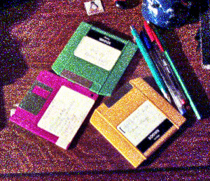
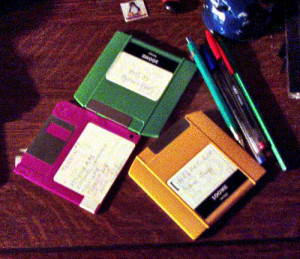

Figure 16.204. “Stress” tone mapping example

Original image

Filter applied with default settings, after changing image precision in GIMP to 32-bit floating point linear light.

Filter applied with Samples 15 and Iterations 20.
This filter uses a Spatio Temporal Retinex-like Envelope with Stochastic Sampling (STRESS). The algorithms work by recalculating each pixel using envelopes for local upper and lower bounds in the image. The envelopes are obtained sampling neighbor pixels and can be interpreted as local reference maximum and minimum. This method can be used for local contrast stretching, automatic color correction, high dynamic range image rendering, spatial color gamut mapping, and color to grayscale conversion with good results.
Based on Ø. Kolås, I. Farup, and A. Rizzi, “Spatio-temporal retinex-inspired envelope with stochastic sampling: A framework for spatial color algorithms”, Journal of Imaging Science and Technology, vol. 55, no. 4, pp. 1–10, 2011.
![[Note]](images/note.png)
|
Note |
|---|---|
|
This filter is slow on larger images. For finding the best settings for your image you could make a small relevant selection first and save that as a preset before using that for the whole image. |
- Presets, Input Type, Clipping, Blending Options, Preview, Merge filter, Split view
-
Note These options are described in Section 8.1.2, “Colors Common Features”.
- Radius
-
Neighborhood taken into account, for enhancement ideal values are close to the longest side of the image (which can be either width or height). Increasing this value makes the filter slower.
- Samples
-
Number of samples to do per iteration looking for the range of colors.
- Iterations
-
Number of iterations; a higher number of iterations provides a less noisy rendering but makes the filter slower.
- Enhance Shadows
-
When enabled shadow regions are also enhanced; when disabled a more natural result is yielded.